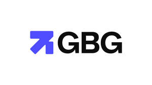

Trade Mark Journal No.2025/019 9 May 2025
UK00004186480 9 April 2025 (9,35,36,42,45)

- Class 9
- Downloadable computer software; data processing software; databases; computer software relating to the compilation, collation, transcription, registration, verification, management, maintenance, updating, access and/or analysis of personal, corporate or commercial information held on computer databases, including telephone numbers, addresses and postcodes; computer software relating to address capture; computer software relating to address data verification and enhancement; computer software relating to geocoding; computer software relating to identity verification and the prevention of identity fraud; computer software relating to credit checking, credit scoring and credit referencing; computer software providing remote or on-line access to computer databases; downloadable electronic publications relating to all the aforesaid.
- Class 35
- Business information services; data processing services; data and database management services; customer information services; data searches in computerised files for others; provision of data and database information for commercial, business or trade purposes; provision of personal, corporate or commercial information including addresses, telephone numbers or postcodes; compilation, collation, transcription, registration, verification, management, maintenance, updating, access and/or analysis of personal, corporate or commercial information held on computer databases, including telephone numbers, addresses and postcodes; address capture services; address data verification and enhancement services; establishing, maintaining and checking information on consumers, individuals, companies and organizations; provision of statistical information.
- Class 36
- Credit referencing services; credit checking services; credit scoring services; provision of financial information regarding individuals, companies and organizations; provision of warranties for authorisation, authentication, encryption and certification services, used to provide security in electronic transactions and communications that take place over the internet and other computer networks; information, consultancy and advisory services in relation to all the aforesaid services.
- Class 42
- Provision of Non-downloadable computer software; Software as a Service (SaaS); Platform as a service (PaaS); provision of non-downloadable software relating to the compilation, collation, transcription, registration, verification, management, maintenance, updating, access and/or analysis of personal, corporate or commercial information held on computer databases, including telephone numbers, addresses and postcodes; provision of non-downloadable computer software relating to address capture; provision of non-downloadable computer software relating to address data verification and enhancement; provision of non-downloadable computer software relating to geocoding; provision of non-downloadable computer software relating to identity verification and the prevention of identity fraud; provision of non-downloadable computer software relating to credit checking, credit scoring and credit referencing; provision of non-downloadable computer software providing remote or on-line access to computer databases; geocoding services.
- Class 45
- Identity verification and authentication services; identity theft and fraud prevention services; regulatory compliance advice and auditing; consultation in relation to data protection compliance.
GB Group plc
Representative: Marks & Clerk LLP